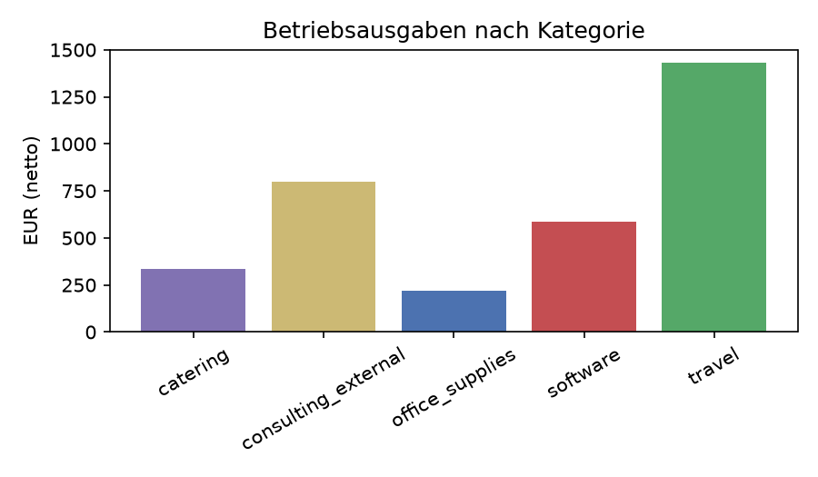

| Datum | Beleg | Netto | USt | Brutto |
|---|---|---|---|---|
| 12.01.2026 | Rechnung 2026-101 | 4.200,00 € | 798,00 € | 4.998,00 € |
| 09.04.2026 | Invoice 2026-102 | 3.000,00 € | 570,00 € | 3.570,00 € |
| 20.08.2026 | Rechnung 2026-103 | 2.500,00 € | 475,00 € | 2.975,00 € |
| 03.09.2026 | Gutschrift 2026-G01 (Korrektur zu 2026-103) | -500,00 € | -95,00 € | -595,00 € |
| Summe | 9.200,00 € | 1.748,00 € | 10.948,00 € |
| Kategorie | Netto | USt | Brutto |
|---|---|---|---|
| office_supplies | 220,00 € | 41,80 € | 261,80 € |
| travel | 1.430,00 € | 100,10 € | 1.530,10 € |
| software | 588,00 € | 111,72 € | 699,72 € |
| catering | 333,33 € | 23,34 € | 356,67 € |
| consulting_external | 800,00 € | 0,00 € | 800,00 € |
| Summe | 3.371,33 € | 276,96 € | 3.648,29 € |

| Betriebseinnahmen (netto) | 9.200,00 € |
| Betriebsausgaben (netto) | 3.371,33 € |
| Jahresüberschuss | 5.828,67 € |
| USt-Zahllast | 1.471,04 € |
Das Geschäftsjahr 2026 schließt mit einem Überschuss von 5.828,67 €. Größter Ausgabenposten waren Reisekosten (1.430,00 € netto), gefolgt von den Fremdleistungen aus dem EU-Ausland (Reverse-Charge-Rechnung, 800,00 € netto, keine deutsche USt fällig). Die Gutschrift vom 03.09.2026 korrigiert den Leistungsumfang der Rechnung 2026-103 und wurde in voller Höhe von den Betriebseinnahmen abgezogen.